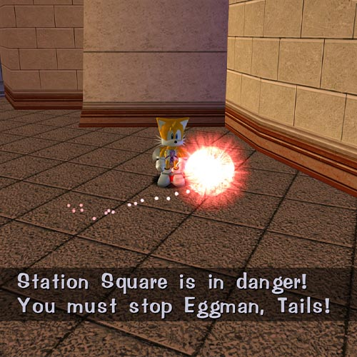

HOME
SONIC THE HEDGEHOG MODS
This is where I mod video games about Blue Hedgehogs.
Mouse over the images for a brief description of each mod.
SONIC MANIA MODS
Dancing Sonic
TD Bugfixes
Spin Dash Ledge Drop
Sonic Mania TDX
Red Shoes Ray
Pepelogoo Whistle
Sonic Mania & Hatsune Miku
SONIC ORIGINS MODS
Alternative Menu
SONIC ADVENTURE MODS

Eggman NPCs
Tracker Textures '24
No Splorching
SONIC ADVENTURE 2 MODS
Tracker Textures (SA2 Ver.)
SONIC ADVANCE 2 MODS
Sonic Advance 2 SP
SONIC HEROES MODS
Tracker Textures (Heroes Ver.)
Heroes Re-Translated
SONIC FRONTIERS MODS
Tracker Physics
HOME


")
")